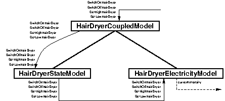

public class HairDryerCyPhy extends fr.sorbonne_u.components.cyphy.AbstractCyPhyComponent implements HairDryerImplementationI
HairDryerCyPhy implements the cyber-physical
component version of the hair dryer.
Description
The hair dryer is an uncontrollable appliance, hence it does not connect with the household energy manager. However, it will connect later to the electric panel to take its (simulated) electricity consumption into account.
This implementation of the hair dryer is complicated by the objective to show
the entire spectrum of possible execution and simulation modes. There are
three execution types defined by ExecutionMode. Here, the component
implements the following modes:
STANDARD/UNIT_TEST/INTEGRATION_TEST: the
component would execute in normal operational conditions, on the field
(currently, however, there is no physical device).UNIT_TEST_WITH_SIL_SIMULATION/INTEGRATION_TEST_WITH_SIL_SIMULATION:
the component creates a local simulation architecture that will simulate
the electricity power consumption of the hair dryer; in unit test, the
simulation architecture operates alone while in integration test, it is
meant to be composed with other local simulators of other components
into an application-wide simulator. The annotation
SIL_Simulation_Architectures declares the local simulation
architectures that are provided by the component.
In this implementation of the HairDryer component, the standard
execution mode is not really implemented as the software is not embedded in
any real appliance. In unit tests with no simulation, the component is
totally passive as its methods are called by the HairDryerUser
component.
For SIL simulations in unit tests, the component presents a rather special case as it is the only component that runs a simulator, hence there is no global component simulation architecture and therefore no need for supervisor and coordinator components. Hence, the local SIL simulation architecture uses only the models pertaining to the hair dryer itself:

After creating (in initialise) its local SIL simulation architecture
and installing the local simulation plug-in (in start), the component
also creates, initialises and triggers the execution of the simulator in the
method execute.
For SIL simulations in integration tests, the HairDryerElectricityModel
cannot share its continuous variable currentIntensity with the
ElectricMeterElectricityModel across component borders. Hence, the
HairDryerElectricityModel is rather moved to the ElectricMeter
component simulator, to co-localise it with the
ElectricMeterElectricityModel, hence the HairDryerStateModel
remaining in the HairDryer component simulator will emits the hair
dryer events to the HairDryerElectricityModel across the border of
the HairDryer and ElectricMeter components.
Implementation Invariants
invariantINITIAL_STATE != nullinvariantINITIAL_MODE != nullinvariantcurrentState != nullinvariantcurrentMode != nullinvariantNUMBER_OF_STANDARD_THREADS >= 0invariantNUMBER_OF_SCHEDULABLE_THREADS >= 0invariantlocalArchitectureURI == null || !localArchitectureURI.isEmpty() && accelerationFactor > 0.0invariantasp == null || localArchitectureURI != null
Invariants
invariantREFLECTION_INBOUND_PORT_URI != null && !REFLECTION_INBOUND_PORT_URI.isEmpty()invariantINBOUND_PORT_URI != null && !INBOUND_PORT_URI.isEmpty()invariantUNIT_TEST_ARCHITECTURE_URI != null && !UNIT_TEST_ARCHITECTURE_URI.isEmpty()invariantINTEGRATION_TEST_ARCHITECTURE_URI != null && !INTEGRATION_TEST_ARCHITECTURE_URI.isEmpty()invariantHIGH_POWER_IN_WATTS != null && HIGH_POWER_IN_WATTS.getData() > 0.0 && HIGH_POWER_IN_WATTS.getMeasurementUnit().equals(POWER_UNIT)invariantLOW_POWER_IN_WATTS != null && LOW_POWER_IN_WATTS.getData() > 0.0 && LOW_POWER_IN_WATTS.getMeasurementUnit().equals(POWER_UNIT)invariantTENSION != null && (TENSION.getData() == 110.0 || TENSION.getData() == 220.0) && TENSION.getMeasurementUnit().equals(TENSION_UNIT)invariantINITIAL_STATE != null && INITIAL_MODE != nullinvariantX_RELATIVE_POSITION >= 0invariantY_RELATIVE_POSITION >= 0
Created on : 2023-09-19
fr.sorbonne_u.components.AbstractComponent.AbstractService<V>, fr.sorbonne_u.components.AbstractComponent.AbstractTask, fr.sorbonne_u.components.AbstractComponent.ExecutorServiceFactory, fr.sorbonne_u.components.AbstractComponent.StandardExecutorServiceFactory, fr.sorbonne_u.components.AbstractComponent.StandardSheduledExecutorServiceFactoryHairDryerImplementationI.HairDryerMode, HairDryerImplementationI.HairDryerStatefr.sorbonne_u.components.ComponentI.ComponentService<V>, fr.sorbonne_u.components.ComponentI.ComponentTask, fr.sorbonne_u.components.ComponentI.FComponentService<T>, fr.sorbonne_u.components.ComponentI.FComponentTask| Modifier and Type | Field and Description |
|---|---|
protected double |
accelerationFactor
acceleration factor to be used when running the real time
simulation.
|
protected fr.sorbonne_u.components.cyphy.plugins.devs.AtomicSimulatorPlugin |
asp
plug-in holding the local simulation architecture and simulators.
|
protected HairDryerImplementationI.HairDryerMode |
currentMode
current mode of operation (low, high) of the hair dryer.
|
protected HairDryerImplementationI.HairDryerState |
currentState
current state (on, off) of the hair dryer.
|
static boolean |
DEBUG
when true, methods provides debugging traces of their actions.
|
protected HairDryerInboundPort |
hdip
inbound port offering the
HairDryerCI interface. |
static fr.sorbonne_u.alasca.physical_data.Measure<java.lang.Double> |
HIGH_POWER
power consumption when in mode HIGH in the power unit used by
the hair dryer.
|
static java.lang.String |
INBOUND_PORT_URI
URI of the hair dryer inbound port used in tests.
|
static HairDryerImplementationI.HairDryerMode |
INITIAL_MODE
initial mode of the hair dryer.
|
static HairDryerImplementationI.HairDryerState |
INITIAL_STATE
initial state of the hair dryer.
|
static java.lang.String |
INTEGRATION_TEST_ARCHITECTURE_URI
URI of the local simulation architecture for SIL unit tests.
|
protected java.lang.String |
localArchitectureURI
URI of the local simulation architecture used to compose the global
simulation architecture or the empty string if the component does
not execute as a simulation.
|
static fr.sorbonne_u.alasca.physical_data.Measure<java.lang.Double> |
LOW_POWER
power consumption when in mode LOW in the power unit used by
the hair dryer.
|
protected static int |
NUMBER_OF_SCHEDULABLE_THREADS
no need for statically defined schedulable threads.
|
protected static int |
NUMBER_OF_STANDARD_THREADS
one thread for the method execute, which starts the local SIL
simulator, and one to answer the calls to the component services.
|
static java.lang.String |
REFLECTION_INBOUND_PORT_URI
standard URI of the hair dryer reflection inbound port.
|
static fr.sorbonne_u.alasca.physical_data.Measure<java.lang.Double> |
TENSION
tension required by the hair dryer in the power unit used by
the hair dryer.
|
static java.lang.String |
UNIT_TEST_ARCHITECTURE_URI
URI of the local simulation architecture for SIL unit tests.
|
static boolean |
VERBOSE
when true, methods trace their actions.
|
static int |
X_RELATIVE_POSITION
when tracing, x coordinate of the window relative position.
|
static int |
Y_RELATIVE_POSITION
when tracing, y coordinate of the window relative position.
|
clockURI, executionMode, localSimulationArchitectures, localSimulationArchitecturesURIs, testScenarioclock, executionLog, executorServices, executorServicesIndexes, executorServicesLock, INITIAL_EXECUTOR_SERVICES_POOL_SIZE, initialExecutorServicesPoolSize, installedPlugins, interfaceManagementLock, interfaces2ports, javassistClassForComponent, javassistClassPool, offeredInterfaces, portManagementLock, portURIs2ports, reflectionInboundPortURI, requiredInterfaces, STANDARD_REQUEST_HANDLER_URI, STANDARD_SCHEDULABLE_HANDLER_URI, state, tracerPOWER_UNIT, TENSION_UNIT| Modifier | Constructor and Description |
|---|---|
protected |
HairDryerCyPhy()
create a hair dryer component for standard execution.
|
protected |
HairDryerCyPhy(fr.sorbonne_u.components.cyphy.ExecutionMode executionMode)
create a hair dryer component for test executions without simulation.
|
protected |
HairDryerCyPhy(java.lang.String hairDryerInboundPortURI)
create a hair dryer component for standard execution with the given
inbound port URI.
|
protected |
HairDryerCyPhy(java.lang.String hairDryerInboundPortURI,
fr.sorbonne_u.components.cyphy.ExecutionMode executionMode)
create a hair dryer component for test executions without simulation with
the given inbound port URI.
|
protected |
HairDryerCyPhy(java.lang.String reflectionInboundPortURI,
java.lang.String hairDryerInboundPortURI)
create a hair dryer component for standard execution with the given
reflection inbound port URI and inbound port URI.
|
protected |
HairDryerCyPhy(java.lang.String reflectionInboundPortURI,
java.lang.String hairDryerInboundPortURI,
fr.sorbonne_u.components.cyphy.ExecutionMode executionMode)
create a hair dryer component for test executions without simulation with
the given reflection inbound port URI and inbound port URI.
|
protected |
HairDryerCyPhy(java.lang.String reflectionInboundPortURI,
java.lang.String hairDryerInboundPortURI,
fr.sorbonne_u.components.cyphy.ExecutionMode executionMode,
fr.sorbonne_u.components.utils.tests.TestScenario testScenario,
java.lang.String localArchitectureURI,
double accelerationFactor)
create a hair dryer component for test executions with simulation.
|
| Modifier and Type | Method and Description |
|---|---|
protected fr.sorbonne_u.devs_simulation.architectures.RTArchitecture |
createLocalSimulationArchitecture(java.lang.String architectureURI,
java.lang.String rootModelURI,
java.util.concurrent.TimeUnit simulatedTimeUnit,
double accelerationFactor) |
void |
execute() |
HairDryerImplementationI.HairDryerMode |
getMode()
return the current operation mode of the hair dryer.
|
HairDryerImplementationI.HairDryerState |
getState()
return the current state of the hair dryer.
|
protected static boolean |
implementationInvariants(HairDryerCyPhy hd)
return true if the implementation invariants are observed, false otherwise.
|
protected void |
initialise(java.lang.String hairDryerInboundPortURI)
initialise the hair dryer component.
|
protected static boolean |
invariants(HairDryerCyPhy hd)
return true if the invariants are observed, false otherwise.
|
void |
setHigh()
set the hair dryer in high mode.
|
void |
setLow()
set the hair dryer in low mode.
|
void |
shutdown() |
void |
start() |
static boolean |
staticImplementationInvariants()
return true if the static implementation invariants are observed, false
otherwise.
|
static boolean |
staticInvariants()
return true if the static invariants are observed, false otherwise.
|
void |
turnOff()
turn off the hair dryer.
|
void |
turnOn()
turn on the hair dryer, put in the low temperature and slow fan mode.
|
configureReflection, createLocalSimulationArchitecturesFromAnnotation, getClock4Simulation, getExecutionMode, getModelInboundPortURI, getScheduledExecutorService, getSimulationManagementInboundPortURI, getSimulatorInboundPortURI, getTestScenario, initialiseClock4Simulation, isAtomicSimulatorComponent, isClock4Simulation, isCoordinatorComponent, isLocalSimulator, isLocalSimulatorInstalled, isSimulationArchitecture, isSimulationArchitectureInstalled, isSupervisorComponentaddInterfacesFromAnnotations, addOfferedInterface, addPluginsFromAnnotations, addPort, addRequiredInterface, awaitTermination, baselineHandleRequest, baselineHandleRequest, baselineHandleRequest, canScheduleTasks, checkImplementationInvariant, checkInvariant, configurePluginFacilities, createComponent, createNewExecutorService, createNewExecutorService, createSubcomponent, doPortConnection, doPortConnection, doPortDisconnection, ensureLoaded, executeTestScenario, finalise, finalisePlugin, findInboundPortURIsFromInterface, findOutboundPortURIsFromInterface, findPortFromURI, findPortsFromInterface, findPortURIsFromInterface, findSubcomponentInboundPortFromURI, getClock, getComponentAnnotations, getComponentConstructorSignatures, getComponentDefinitionClassName, getComponentLoader, getComponentServiceSignatures, getCompositeComponentReference, getDeclaredMethod, getExecutorService, getExecutorService, getExecutorService, getExecutorServiceIndex, getInterface, getInterfaces, getLogger, getOfferedInterface, getOfferedInterfaces, getPlugin, getPluginURIOfType, getPortImplementedInterface, getReflectionInboundPortURI, getRequiredInterface, getRequiredInterfaces, getSchedulableExecutorService, getSchedulableExecutorService, getSchedulableExecutorService, getTotalNumberOfThreads, getTracer, handleRequest, handleRequest, handleRequest, handleRequest, handleRequest, handleRequest, hasInstalledPlugins, hasItsOwnThreads, hasSerialisedExecution, hasSubcomponent, initialiseClock, initialisePlugin, insertAfterService, insertBeforeService, installPlugin, instantiateComponent, invokeService, invokeServiceAsync, invokeServiceSync, isClockInitialised, isFinalised, isInitialised, isInitialised, isInstalled, isInStateAmong, isInterface, isLoggerSet, isLogging, isOfferedInterface, isPluginFacilitiesConfigured, isPortConnected, isPortExisting, isRequiredInterface, isSchedulable, isSchedulable, isShutdown, isShuttingDown, isStarted, isSubcomponent, isSubcomponentOf, isTerminated, isTracerSet, isTracing, logMessage, notInStateAmong, printExecutionLog, printExecutionLogOnFile, removeOfferedInterface, removePort, removePort, removeRequiredInterface, runTask, runTask, runTask, runTask, runTask, runTask, runTaskOnComponent, runTaskOnComponent, runTaskOnComponent, scheduleRequest, scheduleRequest, scheduleRequest, scheduleRequestSync, scheduleRequestSync, scheduleRequestSync, scheduleRequestSync, scheduleRequestSync, scheduleRequestSync, scheduleTask, scheduleTask, scheduleTask, scheduleTask, scheduleTask, scheduleTask, scheduleTaskAtFixedRate, scheduleTaskAtFixedRate, scheduleTaskAtFixedRate, scheduleTaskAtFixedRate, scheduleTaskAtFixedRate, scheduleTaskAtFixedRate, scheduleTaskAtFixedRateOnComponent, scheduleTaskAtFixedRateOnComponent, scheduleTaskAtFixedRateOnComponent, scheduleTaskOnComponent, scheduleTaskOnComponent, scheduleTaskOnComponent, scheduleTaskWithFixedDelay, scheduleTaskWithFixedDelay, scheduleTaskWithFixedDelay, scheduleTaskWithFixedDelay, scheduleTaskWithFixedDelay, scheduleTaskWithFixedDelay, scheduleTaskWithFixedDelayOnComponent, scheduleTaskWithFixedDelayOnComponent, scheduleTaskWithFixedDelayOnComponent, setLogger, setTracer, shutdownExecutorService, shutdownNow, shutdownNowExecutorService, testStepTask, toggleLogging, toggleTracing, traceMessage, unConfigurePluginFacilitites, uninstallPlugin, validExecutorServiceIndex, validExecutorServiceURIclone, equals, finalize, getClass, hashCode, notify, notifyAll, toString, wait, wait, waitawaitTermination, canScheduleTasks, doPortConnection, doPortConnection, doPortDisconnection, finalise, findInboundPortURIsFromInterface, findOutboundPortURIsFromInterface, findPortURIsFromInterface, getComponentAnnotations, getComponentConstructorSignatures, getComponentDefinitionClassName, getComponentLoader, getComponentServiceSignatures, getInterface, getInterfaces, getOfferedInterface, getOfferedInterfaces, getPortImplementedInterface, getReflectionInboundPortURI, getRequiredInterface, getRequiredInterfaces, getTotalNumberOfThreads, handleRequest, handleRequest, handleRequest, handleRequest, handleRequest, handleRequest, hasInstalledPlugins, hasItsOwnThreads, hasSerialisedExecution, insertAfterService, insertBeforeService, invokeService, invokeServiceAsync, invokeServiceSync, isFinalised, isInitialised, isInitialised, isInstalled, isInStateAmong, isInterface, isLoggerSet, isLogging, isOfferedInterface, isPortConnected, isPortExisting, isRequiredInterface, isSchedulable, isSchedulable, isShutdown, isShuttingDown, isStarted, isTerminated, isTracerSet, isTracing, logMessage, notInStateAmong, printExecutionLog, printExecutionLogOnFile, removePort, runTask, runTask, runTask, runTask, runTask, runTask, scheduleRequestSync, scheduleRequestSync, scheduleRequestSync, scheduleRequestSync, scheduleRequestSync, scheduleRequestSync, scheduleTask, scheduleTask, scheduleTask, scheduleTask, scheduleTask, scheduleTask, scheduleTaskAtFixedRate, scheduleTaskAtFixedRate, scheduleTaskAtFixedRate, scheduleTaskAtFixedRate, scheduleTaskAtFixedRate, scheduleTaskAtFixedRate, scheduleTaskWithFixedDelay, scheduleTaskWithFixedDelay, scheduleTaskWithFixedDelay, scheduleTaskWithFixedDelay, scheduleTaskWithFixedDelay, scheduleTaskWithFixedDelay, setLogger, setTracer, shutdownNow, toggleLogging, toggleTracing, traceMessage, validExecutorServiceIndex, validExecutorServiceURIpublic static final java.lang.String REFLECTION_INBOUND_PORT_URI
public static final java.lang.String INBOUND_PORT_URI
public static final java.lang.String UNIT_TEST_ARCHITECTURE_URI
public static final java.lang.String INTEGRATION_TEST_ARCHITECTURE_URI
public static final fr.sorbonne_u.alasca.physical_data.Measure<java.lang.Double> HIGH_POWER
public static final fr.sorbonne_u.alasca.physical_data.Measure<java.lang.Double> LOW_POWER
public static final fr.sorbonne_u.alasca.physical_data.Measure<java.lang.Double> TENSION
public static final HairDryerImplementationI.HairDryerState INITIAL_STATE
public static final HairDryerImplementationI.HairDryerMode INITIAL_MODE
protected HairDryerImplementationI.HairDryerState currentState
protected HairDryerImplementationI.HairDryerMode currentMode
protected HairDryerInboundPort hdip
HairDryerCI interface.public static boolean VERBOSE
public static boolean DEBUG
public static int X_RELATIVE_POSITION
public static int Y_RELATIVE_POSITION
protected static int NUMBER_OF_STANDARD_THREADS
protected static int NUMBER_OF_SCHEDULABLE_THREADS
protected fr.sorbonne_u.components.cyphy.plugins.devs.AtomicSimulatorPlugin asp
protected final java.lang.String localArchitectureURI
protected final double accelerationFactor
protected HairDryerCyPhy()
throws java.lang.Exception
Contract
pre!(this instanceof ComponentInterface)postgetState() == INITIAL_STATEpostgetMode() == INITIAL_MODEpostgetExecutionMode().isStandard()
java.lang.Exception - to do.protected HairDryerCyPhy(java.lang.String hairDryerInboundPortURI)
throws java.lang.Exception
Contract
pre!(this instanceof ComponentInterface)prehairDryerInboundPortURI != null && !hairDryerInboundPortURI.isEmpty()postgetState() == INITIAL_STATEpostgetMode() == INITIAL_MODEpostgetExecutionMode().isStandard()
hairDryerInboundPortURI - URI of the hair dryer inbound port.java.lang.Exception - to do.protected HairDryerCyPhy(java.lang.String reflectionInboundPortURI,
java.lang.String hairDryerInboundPortURI)
throws java.lang.Exception
Contract
pre!(this instanceof ComponentInterface)prereflectionInboundPortURI != null && !reflectionInboundPortURI.isEmpty()prehairDryerInboundPortURI != null && !hairDryerInboundPortURI.isEmpty()postgetState() == INITIAL_STATEpostgetMode() == INITIAL_MODEpostgetExecutionMode().isStandard()
reflectionInboundPortURI - URI of the reflection innbound port of the component.hairDryerInboundPortURI - URI of the hair dryer inbound port.java.lang.Exception - to do.protected HairDryerCyPhy(fr.sorbonne_u.components.cyphy.ExecutionMode executionMode)
throws java.lang.Exception
Contract
pre!(this instanceof ComponentInterface)preexecutionMode != null && executionMode.isTestWithoutSimulation()postgetState() == INITIAL_STATEpostgetMode() == INITIAL_MODEpostgetExecutionMode().equals(executionMode)
executionMode - execution mode for the next run.java.lang.Exception - to do.protected HairDryerCyPhy(java.lang.String hairDryerInboundPortURI,
fr.sorbonne_u.components.cyphy.ExecutionMode executionMode)
throws java.lang.Exception
Contract
pre!(this instanceof ComponentInterface)prehairDryerInboundPortURI != null && !hairDryerInboundPortURI.isEmpty()preexecutionMode != null && executionMode.isTestWithoutSimulation()postgetState() == INITIAL_STATEpostgetMode() == INITIAL_MODEpostgetExecutionMode().equals(executionMode)
hairDryerInboundPortURI - URI of the hair dryer inbound port.executionMode - execution mode for the next run.java.lang.Exception - to do.protected HairDryerCyPhy(java.lang.String reflectionInboundPortURI,
java.lang.String hairDryerInboundPortURI,
fr.sorbonne_u.components.cyphy.ExecutionMode executionMode)
throws java.lang.Exception
Contract
pre!(this instanceof ComponentInterface)prereflectionInboundPortURI != null && !reflectionInboundPortURI.isEmpty()prehairDryerInboundPortURI != null && !hairDryerInboundPortURI.isEmpty()preexecutionMode != null && executionMode.isTestWithoutSimulation()postgetState() == INITIAL_STATEpostgetMode() == INITIAL_MODEpostgetExecutionMode().equals(executionMode)
reflectionInboundPortURI - URI of the reflection innbound port of the component.hairDryerInboundPortURI - URI of the hair dryer inbound port.executionMode - execution mode for the next run.java.lang.Exception - to do.protected HairDryerCyPhy(java.lang.String reflectionInboundPortURI,
java.lang.String hairDryerInboundPortURI,
fr.sorbonne_u.components.cyphy.ExecutionMode executionMode,
fr.sorbonne_u.components.utils.tests.TestScenario testScenario,
java.lang.String localArchitectureURI,
double accelerationFactor)
throws java.lang.Exception
Contract
pre!(this instanceof ComponentInterface)prereflectionInboundPortURI != null && !reflectionInboundPortURI.isEmpty()prehairDryerInboundPortURI != null && !hairDryerInboundPortURI.isEmpty()preexecutionMode != null && executionMode.isSimulationTest()pretestScenario == nullprelocalArchitectureURI != null && !localArchitectureURI.isEmpty()preaccelerationFactor > 0.0postgetState() == INITIAL_STATEpostgetMode() == INITIAL_MODEpostgetExecutionMode().equals(executionMode)
reflectionInboundPortURI - URI of the reflection inbound port of the component.hairDryerInboundPortURI - URI of the hair dryer inbound port.executionMode - execution type for the next run.testScenario - test scenario to be executed with this component.localArchitectureURI - URI of the local simulation architecture to be used in composing the global simulation architecture.accelerationFactor - acceleration factor for the simulation.java.lang.Exception - to do.public static boolean staticImplementationInvariants()
Contract
post true // no postcondition.
protected static boolean implementationInvariants(HairDryerCyPhy hd)
Contract
prehd != nullposttrue// no postcondition.
hd - instance to be tested.public static boolean staticInvariants()
Contract
post true // no postcondition.
staticInvariants in interface HairDryerImplementationIprotected static boolean invariants(HairDryerCyPhy hd)
Contract
prehd != nullposttrue// no postcondition.
hd - instance to be tested.protected void initialise(java.lang.String hairDryerInboundPortURI)
throws java.lang.Exception
Contract
prehairDryerInboundPortURI != null && !hairDryerInboundPortURI.isEmpty()postgetState() == HairDryerState.OFFpostgetMode() == HairDryerMode.LOW
hairDryerInboundPortURI - URI of the hair dryer inbound port.java.lang.Exception - to do.protected fr.sorbonne_u.devs_simulation.architectures.RTArchitecture createLocalSimulationArchitecture(java.lang.String architectureURI,
java.lang.String rootModelURI,
java.util.concurrent.TimeUnit simulatedTimeUnit,
double accelerationFactor)
throws java.lang.Exception
createLocalSimulationArchitecture in class fr.sorbonne_u.components.cyphy.AbstractCyPhyComponentjava.lang.ExceptionAbstractCyPhyComponent.createLocalSimulationArchitecture(java.lang.String, java.lang.String, java.util.concurrent.TimeUnit, double)public void start()
throws fr.sorbonne_u.components.exceptions.ComponentStartException
start in interface fr.sorbonne_u.components.ComponentIstart in class fr.sorbonne_u.components.AbstractComponentfr.sorbonne_u.components.exceptions.ComponentStartExceptionAbstractComponent.start()public void execute()
throws java.lang.Exception
execute in interface fr.sorbonne_u.components.ComponentIexecute in class fr.sorbonne_u.components.AbstractComponentjava.lang.ExceptionAbstractComponent.execute()public void shutdown()
throws fr.sorbonne_u.components.exceptions.ComponentShutdownException
shutdown in interface fr.sorbonne_u.components.ComponentIshutdown in class fr.sorbonne_u.components.AbstractComponentfr.sorbonne_u.components.exceptions.ComponentShutdownExceptionAbstractComponent.shutdown()public HairDryerImplementationI.HairDryerState getState() throws java.lang.Exception
HairDryerImplementationIContract
pretrue// no precondition. posttrue// no postcondition.
getState in interface HairDryerImplementationIjava.lang.Exception - to do.HairDryerImplementationI.getState()public HairDryerImplementationI.HairDryerMode getMode() throws java.lang.Exception
HairDryerImplementationIContract
pretrue// no precondition. posttrue// no postcondition.
getMode in interface HairDryerImplementationIjava.lang.Exception - to do.HairDryerImplementationI.getMode()public void turnOn()
throws java.lang.Exception
HairDryerImplementationIContract
pregetState() == HairDryerState.OFFpostgetMode() == HairDryerMode.LOWpostgetState() == HairDryerState.ON
turnOn in interface HairDryerImplementationIjava.lang.Exception - to do.HairDryerImplementationI.turnOn()public void turnOff()
throws java.lang.Exception
HairDryerImplementationIContract
pretrue// no precondition. postgetState() == HairDryerState.OFF
turnOff in interface HairDryerImplementationIjava.lang.Exception - to do.HairDryerImplementationI.turnOff()public void setHigh()
throws java.lang.Exception
HairDryerImplementationIContract
pregetState() == HairDryerState.ONpregetMode() == HairDryerMode.LOWpostgetMode() == HairDryerMode.HIGH
setHigh in interface HairDryerImplementationIjava.lang.Exception - to do.HairDryerImplementationI.setHigh()public void setLow()
throws java.lang.Exception
HairDryerImplementationIContract
pregetState() == HairDryerState.ONpregetMode() == HairDryerMode.HIGHpostgetMode() == HairDryerMode.LOW
setLow in interface HairDryerImplementationIjava.lang.Exception - to do.HairDryerImplementationI.setLow()